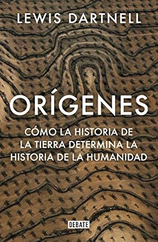

Orígenes
Reseña por Jorge I. Zuluaga

Ver reseña en GoodReads (necesita cuenta)
Este es el atributo más importante (pero no el único) de «Orígenes»: romper los límites entre las disciplinas científicas y hacerlo con maestría, sin perder la profundidad exigida por la ciencia.
En un solo texto y con una «excusa» maravillosa —a saber, entender las condiciones astronómicas, geológicas, climáticas y ecológicas que rodearon el surgimiento de nuestra especie (un evento de especiación único que ocurrió en la sabana africana hace unos 200.000 años, determinado casi con toda seguridad por un clima muy cambiante)—, desde allí a la migración de nuestros antepasados (primero algunos homininos, que salieron en distintas oleadas dando origen a neandertales, denisovanos y otros humanos, y después el *Homo sapiens* mismo), la población de todo el planeta, incluyendo el continente solitario de América, la transición de nuestra especie de cazadores, recolectores y nómadas a agricultores, ciudadanos y científicos, hasta llegar a las rutas de comercio y exploración de los últimos siglos, Lewis Dartnell nos da lecciones realmente grandiosas de astronomía, biología, antropología, paleontología, geología, ciencias atmosféricas e historia.
¡Todo lo que me gusta en un solo libro!
El libro es asombrosamente entretenido (para el nivel de profundidad de su contenido y la amplitud de las disciplinas que cubre), está muy bien escrito (y bien traducido, naturalmente) y su estructura es impecable, casi científica.
Siendo experto en al menos una (o hasta dos) de las disciplinas que Dartnell cubre, debo reconocer que la precisión del lenguaje, la originalidad de las analogías y las descripciones, y la actualidad de los temas demuestran el trabajo juicioso realizado por este biólogo para integrar muchas ideas en una sola y fantástica historia.
Este es el tipo de libro que algún día quisiera escribir.
El libro abunda en referencias que soportan algunas de las afirmaciones más increíbles, lo que permite ir sin demoras a la literatura especializada y buscar los trabajos académicos que respaldan estas ideas. Naturalmente, esto también significa que algunos de los resultados descritos en el libro podrían volverse historia en unos años, una vez se descubran nuevos fósiles o evidencias sobre procesos geológicos y climáticos del pasado remoto; pero así funciona, precisamente, la ciencia.
Después de «El ascenso del hombre» (Jacob Bronowski, 1973) y «Los dragones del Edén» (Carl Sagan, 1978), «Orígenes» es, para mí, el mejor libro divulgativo escrito en las últimas décadas sobre el origen y la evolución de la especie humana.
Con seguridad puedo equivocarme, y qué mejor manera de demostrarlo que leyéndolo.